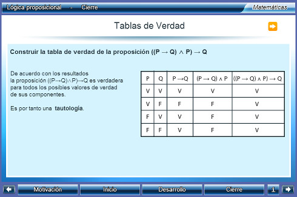
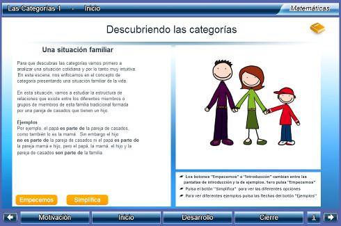
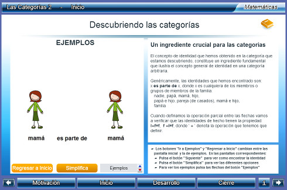
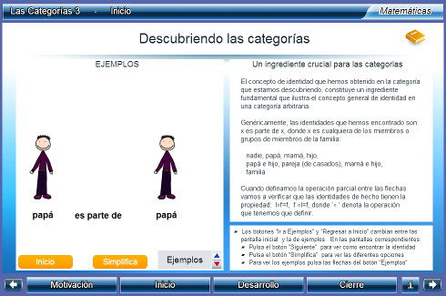
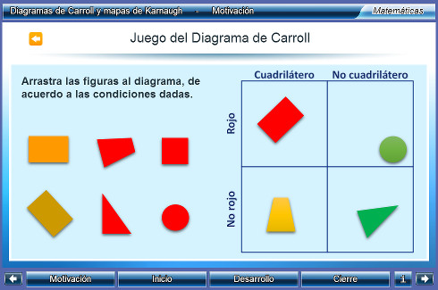
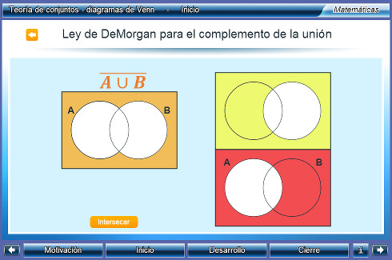

Unidades Didácticas
Interactivas para la Universidad


|
|
Unidades Didácticas Interactivas para la Universidad |
|
|
que implemente el Canvas de HTML5, como por ejemplo: Google Chrome, Mozila Firefox o Safari |
|
Un_044_LogicaProposicional  Descargar |
Lógica proposicional
Identificación de los elementos y operaciones básicas de la lógica proposicional, de tal manera que se pueda analizar y evaluar la estructura proposicional de un enunciado. Área: Matemáticas Nivel: Licenciatura |
|
|
Un_045_LasCategorias_1  Descargar |
Las Categorías 1
Se introduce el estudio de las categorías, functores y transformaciones naturales. Para esto se presenta el concepto de categoría que es una generalización de la teoría de conjuntos clásica y se demuestra su aplicabilidad y la conveniencia de aprenderlas. Área: Matemáticas, Teoría de categorías, Fundamentos Nivel: Licenciatura |
|
|
Un_046_LasCategorias_2  Descargar |
Las Categorías 2
El objetivo de esta unidad interactiva es continuar con el estudio de las categorías, functores y transformaciones naturales. En esta lección introducimos el concepto de identidad en las categorías, el cual es un ingrediente esencial en la definicion de éstas. Área: Matemáticas, Teoría de categorías, Fundamentos Nivel: Licenciatura |
|
|
Un_047_LasCategorias_3  Descargar |
Las Categorías 3
El objetivo de esta unidad interactiva es continuar con el estudio de las categorías, functores y transformaciones naturales. En esta lección introducimos el concepto de composición de morfismos en las categorías, el cual es el último ingrediente en la definicion de éstas. Área: Matemáticas, Teoría de categorías, Fundamentos Nivel: Licenciatura |
|
|
Un_090_DiagramasDeCarrollYMapasDeKarnaugh  Descargar |
Diagramas de Carroll y mapas de Karnaugh
Una alternativa más cómoda y, en nuestro concepto, más lógica, para representar dos o más conjuntos, son los diagramas de Carroll. En Game of Logic, Lewis Carroll hace una introducción instructiva a los conceptos de la lógica, usando diagramas biliterales y triliterales tipo eulerianos. Por otra parte, las representaciones de uno o más atributos y las simplificaciones booleanas o de circuitos lógicos se comprenden mejor con los mapas de Karnaugh que, a través del agrupamiento de ceros y unos, dentro del mapa, ayuda a visualizar las relaciones lógicas entre las variables y conduce directamente a una función booleana simplificada. Ambos diagramas, Carroll y Karnaugh, tienen una lógica de construcción similar. Los objetivos a lograr en esta unidad son: * Representar, en un diagrama de Carroll, dos, tres o cuatro atributos. * Representar, en un diagrama de Carroll, las operaciones entre conjuntos. * Utilizar los mapas de Karnaugh para representar relaciones lógicas entre dos, tres y cuatro variables. Área: Matemáticas, Lógica Nivel: Licenciatura |
|
|
Un_100_DiagramasDeVenn  Descargar |
Diagramas de Venn
Los Diagramas de Venn son representaciones usadas en la rama de la lógica matemática conocida como teoría de conjuntos. Estos diagramas se usan para representar la agrupación de los elementos en conjuntos y las diferentes combinaciones lógicas en uno o más atributos . Los objetivos a lograr en esta unidad son: * Representar, en un diagrama de Venn, uno, dos o tres atributos. * Representar, en un diagrama de Venn, las operaciones entre conjuntos. * Demostrar, gráficamente, las leyes de Morgan Área: Matemáticas, Conjuntos, Lógica Nivel: Licenciatura |
|
que implemente el Canvas de HTML5, como por ejemplo: Google Chrome, Mozila Firefox o Safari |